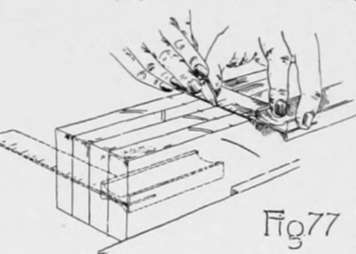
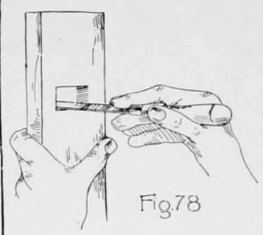

Furniture Making-Keyed Construction. Part 2
Description
This section is from the book "Beginning Woodwork At Home And In School", by Clinton Sheldon Van Deusen. Also available from Amazon: Beginning Woodwork At Home And In School.
Furniture Making-Keyed Construction. Part 2
(e) Remove the pieces from the vise, and with knife and try-square, draw three lines across the working face of each piece even with these knife marks. Place the try-square on each of the pieces, with its beam against the joint side, its blade on the side opposite the working face and with its edge even with the mark that is 2 1/4" from the end. Now draw a knife line along this edge of the try-square ½" long with its nearer end 1" from the joint side. With the try-square in a similar position draw knife lines even with each of the other two marks 1¼" long, with their nearer ends ⅝" from the joint side.
'A mortise ii a rectangular opening in or through a piece, into which a rectangular projection called a tenon fits to form a joint.
(f) Clamp the four braces in the vise in the same manner as the legs were clamped in d, with the two lower braces in the middle. Measure'1½" and 2¼' from each end, and before removing the pieces from the vise, draw knife lines square across all of the joint sides even with the two points that are 2¼" from the ends, and across the joint sides of the two upper braces even with the two points 1½" from the ends.
(g) Remove the braces from the vise and with knife and try-square continue each of the lines square around each piece.
(h) Set the gage equal to the distance (4) from the side of a leg to the nearer edge of the mortise through which the tenon on the lower brace is to pass. Now taking the lower braces, with gage-block against the joint sides, gage lines on the working faces and the surfaces opposite, from each of the knife lines to the ends of the pieces; also gage across the ends. With the same setting of the gage and with the gage-block against the joint side, gage lines on the working face and the opposite surface of each leg between the two knife lines that are respectively 4¾" and 5½" from the end.
(i) Change the set of the gage to the distance (28) from the side of the leg to the farther edge of the mortise and again follow the directions for gaging given in h. This completes the laying out of the mortises on the legs and the tenons on the lower braces.
(j) At this point it is desirable to make the keys, and lay out the holes into which they are to fit. To make the keys, plane the working face and the joint side of the piece from which they are to be made, marking these in four different places. Plane off the side opposite the joint side until it is smooth, then gage and plane the piece to thickness (15). Now cut the four keys to their proper length (29). (See Chapter VI, u). Next set the gage to the width (22) that each key is to be at its upper end, and with the gage-block against the joint side, gage a line on one end of each of the four pieces (Fig. 42). Set the gage to the width (15) that each key is to be at its lower end, and in a similar manner gage a line on the other end of each of the four pieces. Connect the ends of these gage lines by using the straight-edge and knife; then plane off the surplus wood outside of these lines, thus completing the four keys.
(k) Lay out the holes for the keys in the following manner: On the working face measure toward the end of the piece 11/16" from each of the knife lines that were drawn around the lower braces in g. With the beam of the try-square against the joint side of the piece, draw a knife line ½" long even with the points thus located and having their nearer ends 1" from the joint side. By the method used in squaring around a piece, draw on the surface opposite the working face a line directly opposite this one.
Determine the width of a key at a point 1 1/16" from its wider end, and measure this distance toward the end of the brace from the short line just made on the surface opposite the working face. Draw a knife line ½" long at right angles to the joint side through this point, having its nearer end 1" from the joint side. Then determine the width of a key 5/16' from its wider end and measure this distance toward the end of the brace from the short knife line on the working face, and through this point draw a line ½" long at right angles with the joint side and having its nearer end 1" from the joint side. Set the gage to 1" and with the gage-block against the joint side gage a line between each pair of these knife lines on both the working face and the surface opposite. Change the set of the gage to 1½" and with gage-block against the joint side, gage another line between each pair of knife lines. This completes the laying out of the holes for the keys.
(I) To cut out the mortises in the legs, first bore with the 11/16" auger-bit two holes within the space that is to be cut out. Start the bit in each case so that the edge of the hole will extend nearly to the gage line locating the end of the mortise, but in no case should the hole extend beyond the gage or knife lines. This boring will remove the greater part of the wood to be cut out, and the remainder may be removed by placing the piece on the chiseling-board and, holding the chisel as in Fig. 63; take thin cuts about half-way through from each side, cutting to within about 1/32" of the gage and knife lines Now place the chisel in the lines as in Fig. 56 and by light strokes on the handle, good right-angled corners may be formed as the edges of the mortise. The wood now remaining between these right-angled edges should be carefully cut out, testing with a straight edge as, in Fig. 78, to determine when the work is completed.
(in) Cut out the holes in the lower braces for the keys in a similar manner to that described in 1, using the 3/8" bit and starting the bit in the surface opposite the working face.
(n) To remove the surplus wood from the ends of the lower braces so as to form the tenons, place each piece in the vise in a vertical position and saw with the back-saw a little outside of the gage lines, until the saw cuts within about 1/32" of the knife line. Next clamp the piece in a horizontal position in the vise, and saw with the back-saw so that the side of the teeth farthest from the end of the piece cut exactly to the knife line, and saw until the block of wood outside of the tenon is removed. Now carefully pare off the surplus wood which remains outside of the gage lines; also see that good sharp right-angled corners are formed where the two saw cuts meet,
Continue to:
- prev: Chapter VIII. Furniture Making-Keyed Construction
- Table of Contents
- next: Furniture Making-Keyed Construction. Part 3